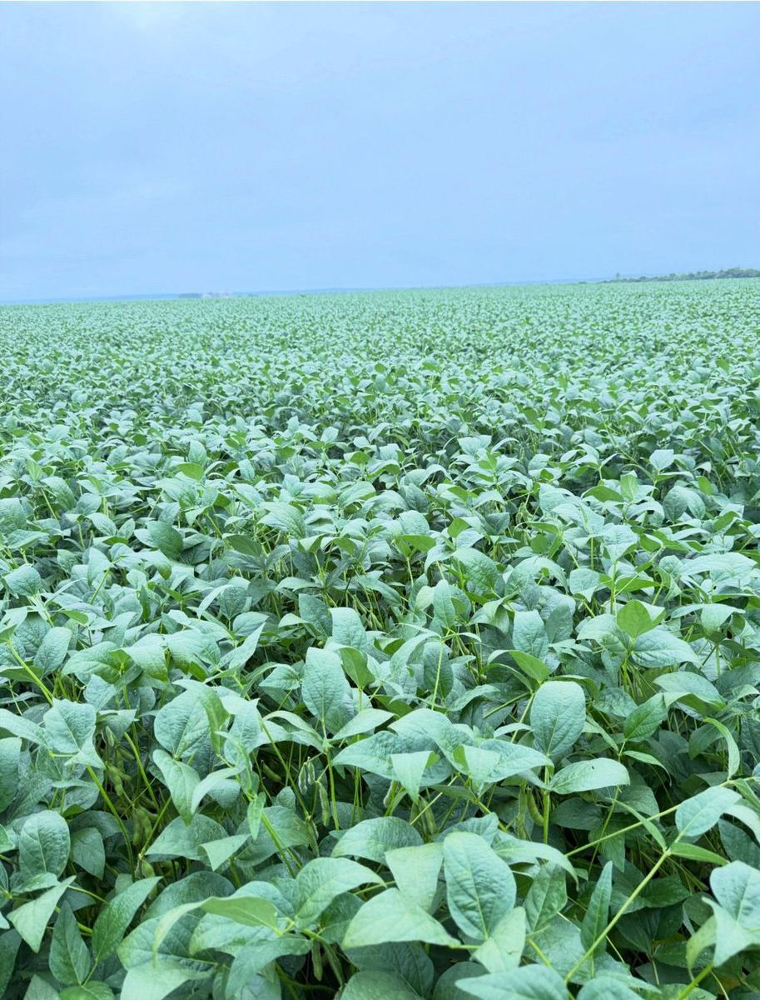
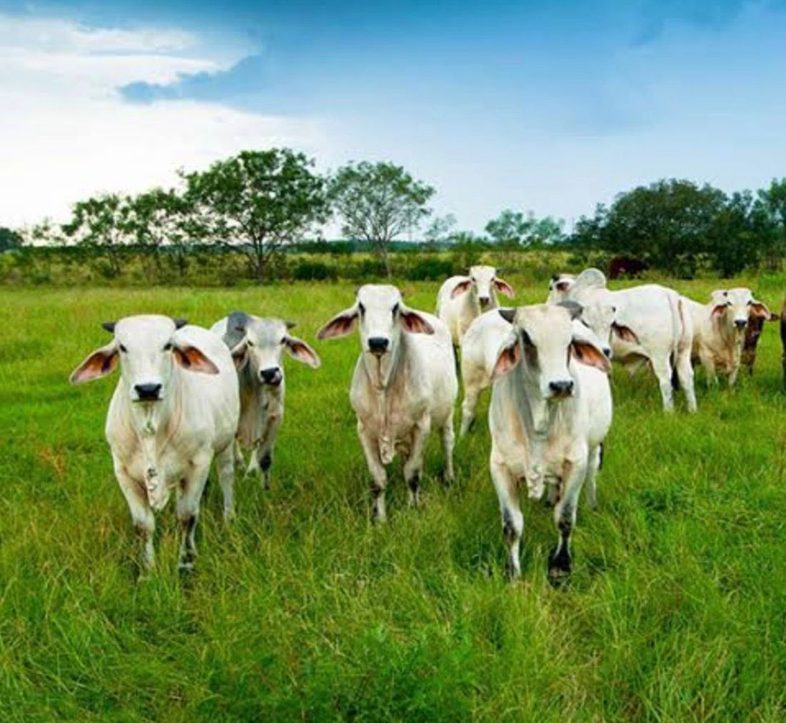
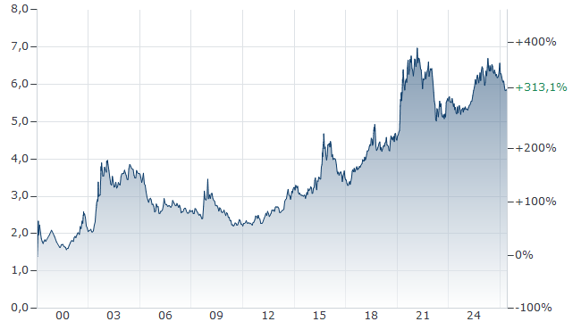

The numbers
What farming in Tocantins costs — and what it returns
Ways to structure a farm
On any property, the permitted 65% can be used intensively, while the protected 35% (Reserva Legal) allows extensive cattle — meaning up to 100% of the land works for you. Typical structures:
- Full arable farming on 65%, two harvests per year; leave the protected 35% to the state carbon scheme.
- Mixed farming — 65% intensive agriculture, extensive cattle on the protected 35%; the state carbon scheme still applies.
- Intensive cattle on 65%, extensive cattle on the protected area.
- Extensive cattle on 100% of the land, and develop your own carbon credit project across the whole property.
- Optionally: obtain a European organic certificate and export to the EU.
The standard crop rotation is soybeans, followed in the second harvest by sorghum, cotton, or maize. An alternative second crop is grass — for pasture or simply as ground cover.
Clearing land
If scrubland is to be cleared for cultivation, the procedure is: mechanical clearing and burning; removal of larger roots and stones; one pass with a heavy 36-inch disc harrow, one with a medium 28-inch, two light passes for levelling; then liming with 8–10 tonnes in two stages (plus, ideally, a tonne of gypsum in year two).
Costs vary with the density of the bush and the condition of the soil, but on average expect around €800 per hectare.
Soybean returns
The local unit is the sack of 60 kg, currently around R$ 120 ≈ €20 at the simplified reference rate of R$ 6 per euro.
- Cultivation cost: ~35 sacks per hectare (≈ €700)
- Average harvest: 60 sacks; good farms reach 70
- Profit: ~25 sacks/ha ≈ €500 per hectare in the main harvest
- The second harvest, with more irregular rainfall, returns a further €300–350 per hectare

All of this without any government subsidies.
Cattle returns
Beef production is partly specialised into breeding, rearing, and fattening farms; fattening happens in feedlots or on pasture. The unit of measure is the arroba (15 kg). A good steer yields 15 arrobas ≈ 225 kg carcass weight, worth about R$ 4,500 at today's prices — of which roughly 25% is profit (≈ €190 per head).
- On the protected 35% (natural pasture): ~1 head/ha → ≈ €190 profit per hectare
- On cultivated pasture: up to 3 head/ha → ≈ €400 profit per hectare after the higher costs
In practice, one either buys lean steers and fattens them over a year, or buys weaned calves and raises them for about three years — either way aiming to sell one head per hectare per year.
Dairy farming is not common in Tocantins.

Business environment & financing
After Brazil vanquished hyperinflation in the mid-1990s, inflation has run roughly between 4.5% and 6%, spiking to around 10% in 2015–16 and again in 2022. The central bank's key rate (SELIC) has ranged between 2% and 14.75% over that period; today it stands at 14.25%.
For agricultural investment, the local borrowing rate is around 14% — tied to the CDI inter-bank overnight rate. A loan taken in US dollars would run roughly 8–12%.
The one asset that cannot normally be financed is the land itself — unless secured against a liquid guarantee such as a bank guarantee. Once purchased, though, the land becomes collateral for everything else: machinery, cattle, inputs.
International and local commodity traders — including the "big four" ABCD (Archer Daniels Midland, Bunge, Cargill, Dreyfus) — offer pre-harvest contracts and finance inputs against them, typically asking 28–32 sacks of soybeans per hectare in return.
Understanding the exchange rate
All euro figures on this site use a simplified reference rate of R$ 6 per euro. The Brazilian real has a general long-term tendency to depreciate against the euro — the chart below shows the last 25 years of the R$/€ rate.

At first glance that looks like a risk for a euro investor. In practice it is largely self-correcting, because the things a farm buys and sells — seeds, fertilizer, beef, soybeans — are priced on world markets, not in local currency.
An example: two months ago a bag of soybeans stood at R$ 120; today it is R$ 110. But over the same period the exchange rate moved from 6.3 to 5.85. Converted to euros, that is €19.04 then versus €18.80 now — in euro terms, the price has barely moved.
In other words, when the real weakens, commodity prices in reais tend to rise to compensate, and your euro-denominated returns stay remarkably stable.